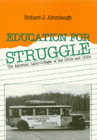

A richly detailed history of the American workers' education movement
A richly detailed history of the American workers' education movement


 A richly detailed history of the American workers' education movement
A richly detailed history of the American workers' education movement

|  |
Education for StruggleThe American Labor Colleges of the 1920s and 1930sRichard J. Altenbaughcloth EAN: 978-0-87722-680-2 (ISBN: 0-87722-680-6) |
"This well-written book bespeaks a wide knowledge of left and labor history as well as of the history of education. The many biographies of teachers, students, and supporters of the schools greatly enrich our knowledge of secondary leadership among the labor left."
—David Roediger, University of Missouri
Richard J. Altenbaugh focuses on the establishment and evolution of three of the major labor colleges. The three schools—Work People's College (1904-41) in Duluth, Minnesota, Brookwood Labor College (1921-37) in Katonah, New York, and Commonwealth College (1923-41) near Mena, Arkansas—were selected because of their longevity, notoriety, geographical diversity, and abundant archives. Collectively these three schools accounted for more than sixty years of workers' education during the early decades of the twentieth century. This is the first comprehensive analysis that compares and contrasts the labor colleges' educational and social goals, programs, and results.
The workers' education movement in the United States grew out of the political and economic struggles of American workers in the early 1900s. Workers created these labor colleges because they perceived the need for education and training to facilitate their struggles. Altenbaugh examines how the colleges fit into the workers' education movement, explores the theoretical bases of the schools, reviews the backgrounds of teachers and students, sketches the careers of some labor college "graduates," and analyzes the conflicts that led to the eventual demise of these schools. The book is a richly textured collective biography of many on the left in the early decades of this century.
Unlike the formal educational system, the labor colleges upheld working-class culture and provided adult worker-students with the knowledge and skills necessary to serve the labor movement. Avoiding traditional teaching methods, they relied on progressive, democratic pedagogy to train labor organizers and activists. Despite the ideological fervor and left-wing support for the labor colleges, a number of factors led to their closing. The fragmentation of the political left doomed the schools to petty factionalism. The combined opposition by business, the conservative right, and the AFL contributed to the repression of the labor programs. And the colleges' insistence on independence from other institutions to avoid the implication of political alignment sealed their fate. While the schools never achieved the "new social order" that was envisioned, this study evaluates the significance of their brief existence and the lessons that can be applied to the mature but ailing labor movement today.
Excerpt available at www.temple.edu/tempress
"Lucien Koch, a teacher and later a director at Commonwealth College, once summarized the schools' purpose as 'education leaders for a new society.' In so doing, he succinctly delineated the general social and educational aspirations of the labor colleges. And the schools formulated educational programs that pursued these ideals. He believed that existing colleges and universities were incapable of providing effective workers' education because they were dominated by a bourgeois mentality that resulted in binding endowments by special interest groups or constraining legislative appropriations. Koch also attacked exclusive fraternity and sorority systems, excessive emphasis on varsity sports, and compulsory religious services. The founders of the labor colleges believed that without this bourgeois "claptrap" their students would not be distracted from their basic goal of education for social change, and accordingly fashioned an educational program that specifically served the needs and interests of workers.
"The labor colleges relied upon an ideological-confrontational educational program that emphasized social-class conflict and working-class solidarity. They achieved this through a variety of courses stressing content and social issues, and pedagogical techniques combining classroom interaction with militant off-campus activities. First, the formal curriculum provided rudimentary learning skills for workers with limited educational backgrounds. Second, every aspect of the formal curriculum sought to imbue the worker-student with class consciousness. The social sciences dominated the curriculum and concentrated on areas pertinent to the students' backgrounds and needs, while activities such as labor drama and fieldwork stressed class conflict. Third, informational courses enabled students to acquire the intellectual skills necessary to analyze their society and determine the roots of working-class problems. Fourth, "tool" courses emphasized the practical means by which to ameliorate working-class conditions. Helen G. Norton, a Brookwood instructor, concisely outlined these points:
They're coming, in the first place, for knowledge…knowledge about their own unions, about the history of the labor movement in this and other countries….
Then they're coming to learn how to use facts after they have them—how to express their ideals so the crowd will get them and be moved to action by them; how to put ideas into print so people will read and understand them. They're coming to learn how people act under given conditions and why, and all the other things that psychology can teach about handling groups and individuals.
"The labor college curriculum prepared students to serve the labor movement as active organizers and leaders instead of as union bureaucrats; in Norton's words, the schools expected them to return "to the union—to the bench, to the mine face, to the local as business agents, or to pass on some of this knowledge in the workers' education classes." Fifth, informal on-campus and off-campus activities ensured that students unable to attend the full-time residential program could participate in workers' education. For the labor colleges in general and for Brookwood in particular after 1927, the formal and informal curricula often functioned as forums in which the staid policies of the AFL were attacked. These criticisms, to be sure, did not escape the attention of the Federation hierarchy."
—From Chapter 3: Knowledge Is Power
"This richly detailed history of the American workers' education movement focuses on the establishment and evolution of three major labor colleges."
—Work People's College, Brookwood Labor College, and Commonwealth College
Acknowledgments
Introduction
Part I: A Context for the Labor Colleges
Workers' Education
Part II: Social and Educational Goals and Practices
A Culture in Overalls and Workmarked Hands
Knowledge Is Power
Teachers and Students
Part III: Conflict and Struggle
Harassment
Fratricide
The End of the Labor Colleges
Part IV: An Educational Legacy
Achievements of the Labor Colleges
Notes
Bibliography
Index
Richard J. Altenbaugh is Assistant Professor in the Department of History at Northern Illinois University
Labor and Social Change, edited by Paula Rayman and Carmen Sirianni.
Labor and Social Change, edited by Paula Rayman and Carmen Sirianni, includes books on workplace issues like worker participation, quality of work life, shorter hours, technological change, and productivity, as well as union and community organizing and ethnographies of particular occupations.
© 2015 Temple University. All Rights Reserved. This page: http://www.temple.edu/tempress/titles/701_reg.html.